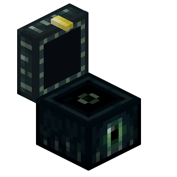
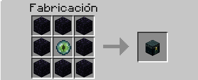

tablones de madera en una
tablones de madera en una  mesa de crafteo, tambien se puede conseguir en diversas estructuras del juego.
mesa de crafteo, tambien se puede conseguir en diversas estructuras del juego.
El cofre es uno de los objetos mas importantes de todo el juego.
Este sirve para guardar todos los objetos del juego en un lugar fijo.
Se consigue poniendo 8 tablones de madera en una mesa de crafteo, tambien se puede conseguir en diversas estructuras del juego.
 Hacha de cualquier material
Hacha de cualquier materialExiste una variante llamada cofre de end:


Este funciona como un cofre portatil que puedes acceder a su interior desde cualquier cofre de end.
Para conseguir esta variante se puede craftear o encontrar en una End City.
Para romperlo se necrsita un pico con toque de seda.